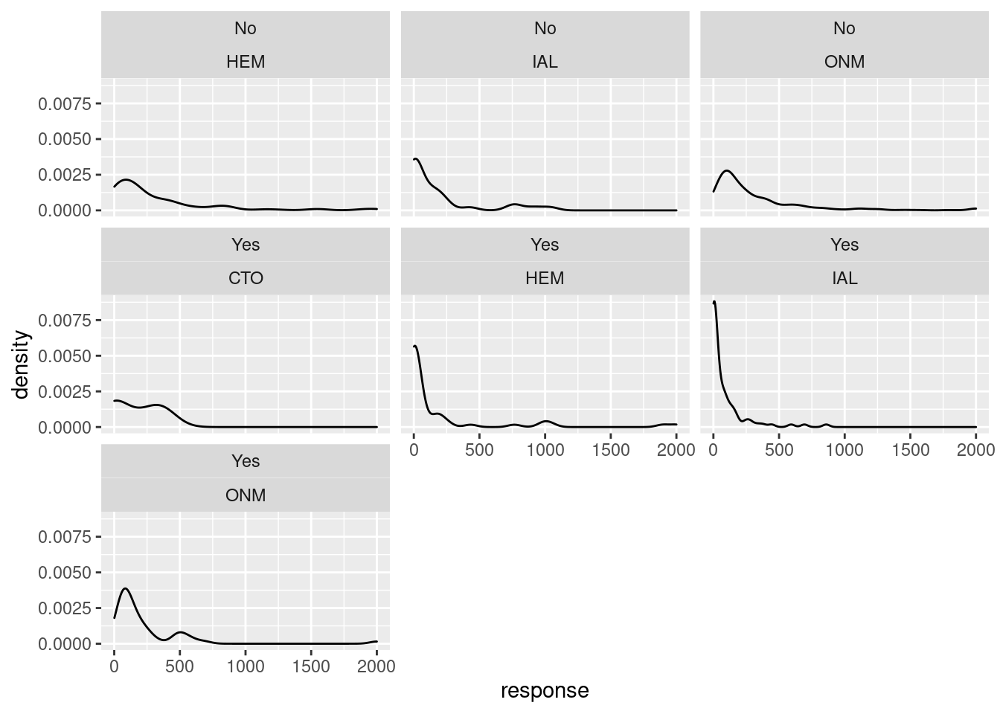
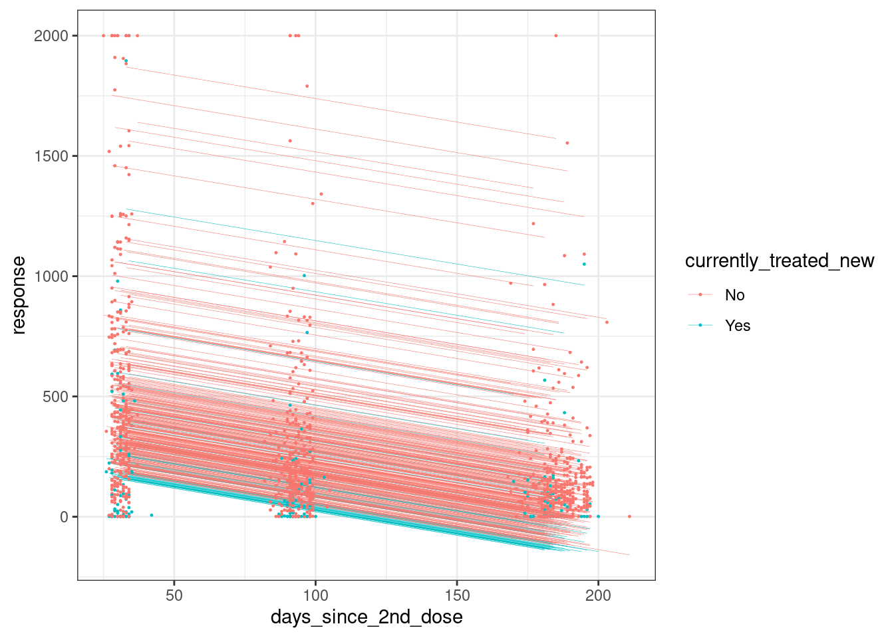
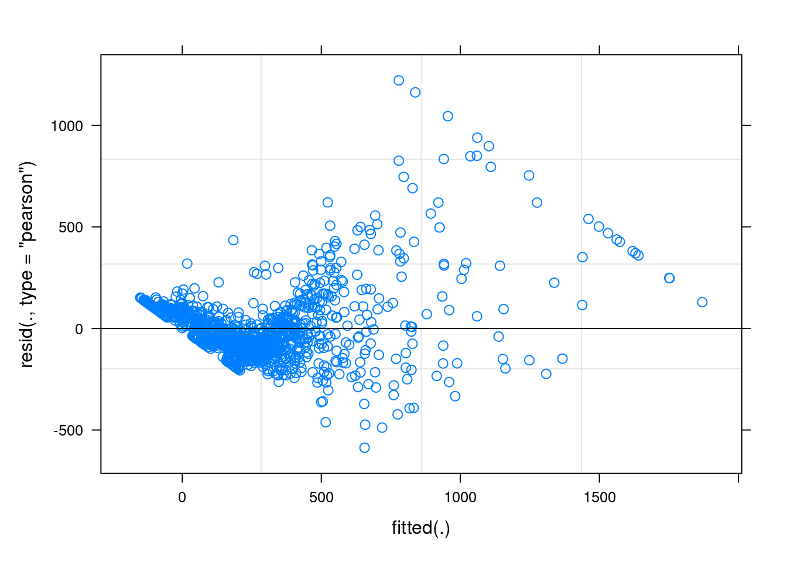

ImmunoVax Immunosuppressive Medication Report
Updated Treatment Classification Rules for Unknown Status
| Free Text Classifiers | Updated Treatment Classification |
|---|---|
| “CURRENTLY UNTREATED” | No |
| “NO TTT” | No |
| “REMISSION” | No |
| “ONGOING” | Yes |
| “CURRENTLY” | Yes |
| “SINCE” | Yes |
| “TODAY” | Yes |
| “UNTIL NOW” | Yes |
| last treatment date less than 60 days before first visit date | Yes |
| last treatment date more than 60 days before first visit date | No |
| last treatment date less than 30 days before first vaccine | Yes |
| last treatment date more than 30 days before first vaccine | No |
| Organ Transplant Group | Yes |
| Hormonotherapy medications | No |
| Currently Treated | CTL n=193 | CTO n=35 | HEM n=102 | IAL n=98 | ONM n=467 | Total n=895 | |
|---|---|---|---|---|---|---|---|
| Original Treatment Classification | No | 193 (100.0) | 1 (100.0) | 44 (100.0) | 3 (100.0) | 208 (74.8) | 449 (86.5) |
| Yes | 0 (0.0) | 0 (0.0) | 0 (0.0) | 0 (0.0) | 70 (25.2) | 70 (13.5) | |
| missing | 0 | 34 | 58 | 95 | 189 | 376 | |
| New Treatment Classification | No | 193 (100.0) | 1 (2.9) | 61 (77.2) | 14 (31.8) | 328 (82.4) | 597 (79.7) |
| Yes | 0 (0.0) | 34 (97.1) | 18 (22.8) | 30 (68.2) | 70 (17.6) | 152 (20.3) | |
| missing | 0 | 0 | 23 | 54 | 69 | 146 |
Antibody Response Differences in Treated vs Untreated Immunocompromised Patients (No Controls) during first 6 months of follow up
Welch Two Sample t-test
data: vax_resp_data$cov2nw by vax_resp_data$TKI
t = -3.3613, df = 5.0165, p-value = 0.01998
alternative hypothesis: true difference in means between group No and group Yes is not equal to 0
95 percent confidence interval:
-1664.1416 -222.6278
sample estimates:
mean in group No mean in group Yes
284.4153 1227.8000
Welch Two Sample t-test
data: vax_resp_data$cov2nw by vax_resp_data$JKI
t = 22.842, df = 139.03, p-value < 2.2e-16
alternative hypothesis: true difference in means between group No and group Yes is not equal to 0
95 percent confidence interval:
256.7446 305.4031
sample estimates:
mean in group No mean in group Yes
289.9739 8.9000
Welch Two Sample t-test
data: vax_resp_data$cov2nw by vax_resp_data$imm_mod
t = 8.1893, df = 16.543, p-value = 3.223e-07
alternative hypothesis: true difference in means between group No and group Yes is not equal to 0
95 percent confidence interval:
164.7641 279.4482
sample estimates:
mean in group No mean in group Yes
291.5312 69.4250 | Antibody | Untreated | Treated | p.value |
|---|---|---|---|
| Wild Type | NA | NA | 1.548807e-09 |
| 316.09 | 153.38 | ||
| Delta | NA | NA | 1.751404e-15 |
| 140.77 | 54.05 | ||
| Omicron | NA | NA | 2.869622e-17 |
| 56.01 | 20.84 |

Linear mixed model fit by REML ['lmerMod']
Formula: response ~ days_since_2nd_dose + currently_treated_new + (1 |
ptgroup) + (1 | ptid_4)
Data: vax_resp_data
REML criterion at convergence: 16489.1
Scaled residuals:
Min 1Q Median 3Q Max
-2.8667 -0.4745 -0.1904 0.3573 5.9171
Random effects:
Groups Name Variance Std.Dev.
ptid_4 (Intercept) 74519 272.98
ptgroup (Intercept) 1590 39.88
Residual 42378 205.86
Number of obs: 1170, groups: ptid_4, 393; ptgroup, 4
Fixed effects:
Estimate Std. Error t value
(Intercept) 496.05613 33.66928 14.733
days_since_2nd_dose -1.95203 0.09463 -20.627
currently_treated_newYes -139.03272 44.82816 -3.101
Correlation of Fixed Effects:
(Intr) dy__2_
dys_snc_2n_ -0.291
crrntly_t_Y -0.386 0.003Analysis of Deviance Table (Type II Wald F tests with Kenward-Roger df)
Response: response
F Df Df.res Pr(>F)
days_since_2nd_dose 425.4762 1 779.04 < 2.2e-16 ***
currently_treated_new 7.4299 1 61.59 0.008342 **
---
Signif. codes: 0 '***' 0.001 '**' 0.01 '*' 0.05 '.' 0.1 ' ' 1 2.5 % 97.5 %
.sig01 251.166182 297.013799
.sig02 0.000000 100.134378
.sigma 195.913519 216.381656
(Intercept) 431.181137 549.999143
days_since_2nd_dose -2.137685 -1.766516
currently_treated_newYes -240.047185 -66.120012
Linear mixed model fit by REML ['lmerMod']
Formula: response ~ days_since_2nd_dose + currently_treated_new + (1 |
ptid_4)
Data: vax_resp_data
REML criterion at convergence: 16489.3
Scaled residuals:
Min 1Q Median 3Q Max
-2.8512 -0.4761 -0.1925 0.3598 5.9327
Random effects:
Groups Name Variance Std.Dev.
ptid_4 (Intercept) 74940 273.8
Residual 42377 205.9
Number of obs: 1170, groups: ptid_4, 393
Fixed effects:
Estimate Std. Error t value
(Intercept) 511.08138 19.16109 26.673
days_since_2nd_dose -1.95213 0.09463 -20.629
currently_treated_newYes -160.50143 40.59003 -3.954
Correlation of Fixed Effects:
(Intr) dy__2_
dys_snc_2n_ -0.509
crrntly_t_Y -0.351 0.002Analysis of Deviance Table (Type II Wald F tests with Kenward-Roger df)
Response: response
F Df Df.res Pr(>F)
days_since_2nd_dose 425.528 1 779.04 < 2.2e-16 ***
currently_treated_new 15.636 1 391.26 9.115e-05 ***
---
Signif. codes: 0 '***' 0.001 '**' 0.01 '*' 0.05 '.' 0.1 ' ' 1 2.5 % 97.5 %
.sig01 251.166157 297.013801
.sigma 195.913508 216.381660
(Intercept) 473.550162 548.612879
days_since_2nd_dose -2.137685 -1.766516
currently_treated_newYes -240.047273 -80.954867